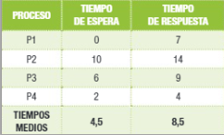
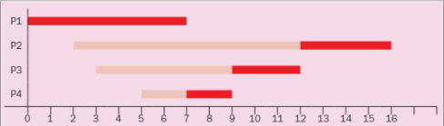
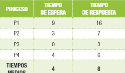
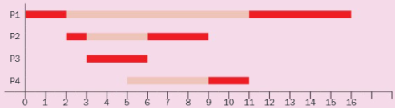

Schedulling
FIFO SJF SRTF PNP PP RR
The order is related to when they arrive.


They order depends on how much time do they take, from the lower to the longer.
  This algotirithm chooses among the awaiting processes, the one
which takes less time to finish. In case of tie/draw, FIFO
algorithm applies.
This is a preemptive algorithm, so it can produce a change of
context, every time that a new process arrives.
It goes in order of priority.


It goes in order of priority and processes can interrupt others if they have more priority.
  It needs that the change of context is very fast, because it
happens several times.
This is a preeptive algorithm.